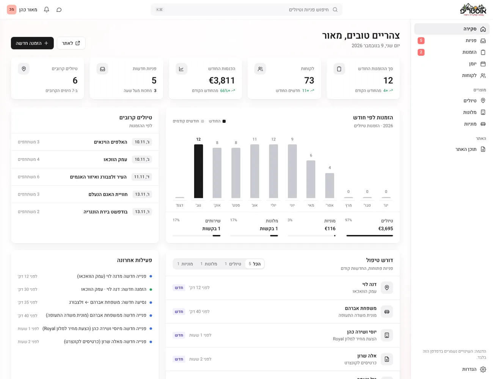

Austrip Dashboard

An admin dashboard for the Austrip team: every request from the site, bookings, taxis and tour content in one place, designed in Figma and built in code.
The other side of the booking site
Austrip is an Israeli tour operator in Vienna. After I redesigned and rebuilt their site (see the Austrip case study), I looked at the people who answer it. Bookings live in Checkfront, the site lives in WordPress, and only an outside developer can change a price or a photo. I designed and built one dashboard that brings all of it together, with the goal of replacing Checkfront.
Three tools and a developer for every change
Scattered requests
Tour bookings, hotel quotes, taxi orders and contact forms arrive in different places. Nothing shows what still needs an answer.
One dashboard
Every form on the site lands in one inbox. A request becomes a booking in one click, and bookings and taxi rides share one calendar.
The team owns the site
Prices, photos, schedules and tour texts can be edited by the team itself. "Save & publish" updates the live tour page, no developer needed.
Quiet by design
A dashboard is used for hours every day, so it should stay calm. I designed nine screens in Figma first, then built them in code with Claude. White surfaces separated by soft shadows, a subtle warm gradient in the background, the Heebo typeface for Hebrew, one neutral icon color, and color only where it carries meaning: the status of a request.


What needs attention today
The first screen answers two questions: what do I need to handle now, and how is the month going. Five small stat cards sit on top, with the icon in one neutral color on the same row as the title. Below them are bookings by month, the upcoming tours, open requests filtered by type, and a feed of recent activity. Every screen starts empty and fills only with real data.
Every request in one list
Every form on the site, from a tour booking to a hotel quote or a taxi from the airport, arrives here. Segmented tabs filter by type, and the request opens next to the list: the details on top, the customer's own message in its own box, and the next step as one button, "Convert to booking" or WhatsApp.

One page, no tabs
Editing a tour is a single scrolling page that follows the tour page itself: details, schedule, highlights, what's included and not included, gallery and "Good to know". Photos and the publish status sit on the side. On the tours list, one switch shows or hides a tour on the site.


Tours and taxis at a glance
The month view puts tours in solid black and taxi rides in an outline, so the two read apart without extra colors. Clicking a day opens everything planned for it, and a new booking can be added from there.

Designing for the people behind the site
Two audiences, one product
A booking site serves travelers, and the team that answers them. Designing the dashboard changed how I shaped every form on the site: each one now sends exactly what the team needs to reply.
Calm beats colorful
Early versions used tinted cards and colored tags. Taking color away and keeping it only for status made the important things stand out on their own.
Empty is a real state
Without demo data, every screen had to explain itself when it was empty and still look finished. Designing those states made the dashboard honest from day one.
Thanks for reading!
More projects
Keep exploring the work.